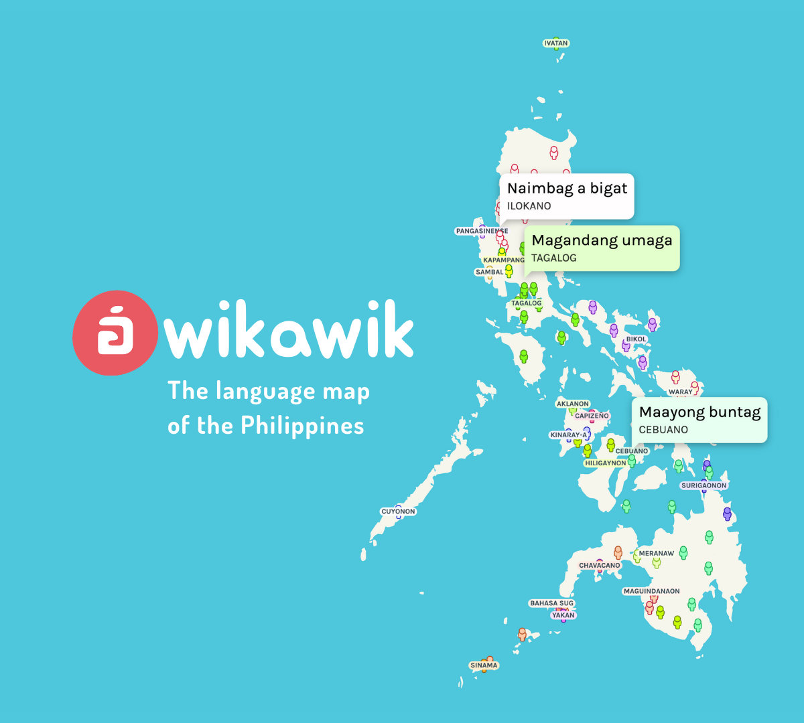

Wikawik

Language map of the Philippines
According to the diksiyonaryo: “wikawik” is a Filipino word, meaning madaldal or talkative or chatty.
wikawik [wi·ká·wik] adjective
talks a lot.
diksiyonaryo.ph
Wikawik, on the other hand, is a webapp that showcases the various languages spoken in the Philippines.
Project detailsOpen the app- released
- 2020
- role
- creator
- platform
- Web
- tech
- HTML, JS, D3.js, MobX, GeoJSON
There are over 100 languages spoken across the Philippine archipelago.
It’s amazing how diverse the language landscape of the Philippines is, yet it is rarely treasured or celebrated in the Philippines.
In my grade school years in the Philippines, we celebrated Buwan ng Wika (Month of Language) every August, but they never actually taught us about languages in the Philippines. It was only ever about Tagalog. Now that I’m older, I got a wider appreciation of the languages in the Philippines.

This project has been on my list of project ideas for a while now. It was only in 2020 mid-quarantine August that the project gained traction, just in time for Buwan ng Wika.
The main idea behind the project was that it would be a phrase book in map form. Instead of the usual map visualization with color-coded regions, there would be phrases shown in local tongues spoken throughout the country.

The phrases would be translations of everyday words and phrases, such as “good morning” and “good evening”.
I also had an idea of having audio recordings of native speakers saying each of the phrases, because not all languages are pronounced the same. However, it wasn’t really feasible for me to do so.
Without audio resources, I had to settle on plain text phrases, lacking any pronunciation information.
The text phrases are displayed via speech bubbles that pop up from the little person markers scattered throughout the map.

The distribution of these markers is based on actual language distribution as per census data.
Clicking on a marker will conjure an information panel containing details about the selected language.

The information panel contains statistics about the language and the locality in which the selected language is spoken.
It also contains info scraped from Wikipedia and the Atlas Filipinas from the Komisyon sa Wikang Filipino (KWF).

Language endangerment data was obtained from the KWF Atlas as well, though I doubt the accuracy and up-to-dateness of some entries.
My favorite part was the Related Media section that features some pieces of music and videos sung or spoken in the local language.

I curated these media by hand and I really enjoyed discovering all these music sung in different Philippine languages.
The visualization was implemented using D3.js. I also used the MobX library to coordinate the whole app. Some smaller geo manipulation utilities helped along too.
Everything was written in vanilla JS. In hindsight I should’ve used some UI framework and a compiler, because the main script reached about 2000 lines! This has been a great reminder of the state of the vanilla web; without webpack and without TypeScript.
Early test of marker entrance animation
The research needed for the app was probably the most time-consuming thing I did for this project. For comparison, I finished implementing the main visualization interface in one week. The data cleanup and research took about a month.
The data was primarily based on the Philippine Statistics Authority’s 2010 Census. The census surveyed, among other things, the main languages spoken at home in sampled households across the country.
But it got a little messy. There were inconsistencies throughout the data. Even the PSA and the KWF don’t agree on which are dialects and which are languages.
For example, look into Thinking Machine’s story about The language landscape of the Philippines. That visualization was based on raw PSA data.
One example issue with raw PSA data is, you won’t find the Rinconada language in there. PSA classified this language and other Bicol languages as one “Bikol/Bicol”. On the contrary, KWF classifies these non-mutually-intelligible languages separately.
There were many such cases of mismatch and misrepresentation in PSA data, which is sad.
That’s why a combination of other sources were used to supplement or correct this data, like the KWF Atlas, Ethnologue, Glottolog, and more.
The app loader is an animation of the logo morphing between the letters wi and ka in stylized Baybayin.
Related to that were the translated phrases themselves. The phrases were the hardest to research!
Usually, meta information about a small language are readily available on the internet, but what I needed were the words themselves - vocabularies, or phrase books. These resources are often non-existent, especially for dying languages that only had a handful of native speakers left.
I ended up going through internet listicles, language tutorials, random chatter in public Facebook groups of tribespeople, sparse bilingual dictionaries, and translated Bibles made by missionaries to the Philippines.
I know it’s not rigorous research, so I wrote a bunch of disclaimers on the About page.
In the end, I got up to 82 translations. And that is for a single phrase only – the default “good morning”. For other phrases, such as “good evening”, not so much. I put up some forms for user submitted translations, but no one has ever submitted anything yet.
It was a fun and educational project. It made me appreciate the Philippine languages more and discover a glimpse of the cultures around the Philippines!
Here’s a link to the webapp. Salamat sa pagbisita!